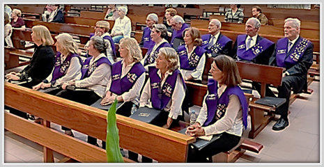

Curso24—25
Archivo
Abrir agenda completaDiez actuaciones documentadas
Misas, funerales, conciertos de Navidad y Semana Santa, y la festividad del Corpus Christi.
Desde 1991, reunimos voces, generaciones y emociones para convertir cada encuentro en algo que permanece.
Bienvenidos a la página web de la agrupación musical Coro Chamberí Maristas.
Un cariñoso saludo para todos los que, como nosotros, comparten la afición por la música y que con toda ilusión contribuyen a divulgar la música de coro por todos los lugares.
Nos encontramos en Madrid, en el Colegio Chamberí que rigen los Hermanos Maristas, en la calle Rafael Calvo, 12.

Las secciones históricas se conservan íntegramente, pero organizadas según lo que el visitante necesita encontrar.
Fundación, repertorio, actuaciones y grabaciones.
02Biografía completa de José Luis Pinilla.
03Sopranos, contraltos, tenores y bajos.
04Cursos 2024–25 y 2023–24 con todos sus hitos.
05Los 68 documentos fotográficos publicados del curso 2023–24.
06Archivo detallado del curso 2023–24.
07Programación publicada para el curso 2024–25.
08Ensayos, requisitos y forma de incorporarse.
09Letra completa del Himno del Colegio Chamberí.
10Artículos heredados sobre música, infancia y salud.
11Respuestas infantiles y decálogo del director.
12Correos, Instagram, dirección y teléfono.
La web anterior recoge diez actuaciones durante el curso 2024–25. Se muestran como archivo hasta que el coro publique nueva programación.
Misas, funerales, conciertos de Navidad y Semana Santa, y la festividad del Corpus Christi.
Director titular desde la fundación del coro en 1991, formado en el Real Conservatorio Superior de Música de Madrid.
Su trayectoria combina dirección coral, docencia, guitarra, solfeo, composición, versiones corales y arreglos.
Conocer su trayectoriaDe 19:15 a 21:00 en el aula de música del Colegio Chamberí.
Cómo incorporarse28010 Madrid. Colegio Chamberí Maristas.
Datos de contactoConciertos, misas, bodas, funerales, festivales y encuentros corales.
Consultar disponibilidad